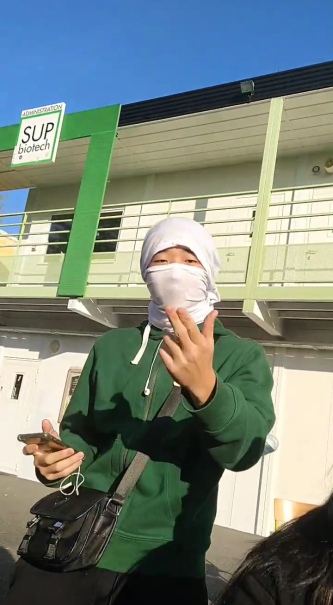
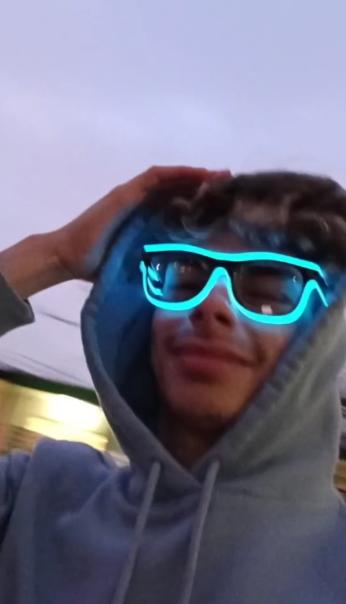

Putting the group together was quite simple as we got to know each other
during the first semester. We knew each other’s strengths and weaknesses,
and keeping all these factors in mind, we chose each other as teammates on
this project. Also, the fact that we know each other and have developed an
affinity for each other was also an advantage
for us, as it would guarantee a
good understanding and cohesion of the group.
Our name, ”4-sight”, refers to the ability to predict what will happen or be
needed in the future. This name has an important meaning for us because we
aspire to acquire this ability.
We are four people with a common passion: computers. This video game
is a way for us to apply everything we have been taught so far while learning
new things. Each member of this group is essential.
Each one has a field in
which he is really gifted, some will be better in programming, others have more
creativity, it is this diversity which makes the richness of this group.

The first member and group leader of our lovely team : Shreya. Indeed, the latter is a novice in the field of computer sciences. Shreya has always been fascinated by computers without necessarily having manipulated algorithms. This project is a challenge for her, she wants to prove that despite the lack of experience in computer sciences, it is possible to create this game, even if she is aware that it will be difficult. She brings to this group the visual and musical creativity it needs to produce this game. We decided to give her the position of team leader because we believe in her and her leadership skills.

The second member of our team: Melody. Melody is a little more discreet than the rest of us, but she is just as gifted in computing. Indeed, she has a general baccalaureate, specialising in mathemat- ics and computer science, and is quite at ease with algorithms and program- ming. Her greatest asset? the creation of websites, she has already created several! It was during her high school years that she learned to code in HTML and CSS. Her computer skills and creativity will be very useful for this project. Melody is an essential pillar of this team.

The third member of our team: David. David is also a novice, he never understood computer science before EPITA, he was skeptical and he didn’t know if he would like it. Fortunately for him, he managed to love what he was doing from the start. David, since his childhood, is passionate about video games. It is what has given him a greater appreciation for filmmaking, and also developed his creativity. This design genius will allow us to develop an incredible map and characters on softwares like Unity and Blender. It is during this project that he aspires to improve his programming and algorithmic skills. David guarantees us a great visual for our video game!

> Fourth and last member of our Dream Team:: Julien. Julien is a computer genius from the 91 region of France, like the well-known group PNL, and lives a peaceful life in his country town. Since middle school, he has been attracted to new technologies, becoming more and more interested in this field. He is now a student at EPITA and ready to throw his heart and soul into this new project. Thanks to his computer skills and his unrivalled sense of humour, he guarantees a good progress in the project and a good atmosphere between us. Julien is a sure bet for this group!